Next: 10. Frequently Asked Questions
Up: Toolkit for Conceptual Modeling
Previous: 8. Tree Editing
Subsections
9. Mini-tutorial on Notation Techniques
This appendix contains a short tutorial on the use of
the notation techniques that are supported by TCM.
Detailed information on the notations of structured analysis and
the UML is given in R.J. Wieringa, Design
Methods for reactive Systems: Yourdon, Statemate and the UML,
Department of Computer Science, University of Twente,
1999.
The miscellaneous notations are documented in [22].
9.1.1 Entity-Relationship Diagrams (TESD)
The TCM convention for TESD is described in detail
in [23].
9.1.1.1 Entity types
As usual, a named rectangle represents a named entity type.
9.1.1.2 Binary relationships
Binary relationships are presented by lines.
9.1.1.3 Cardinality properties
Cardinality properties are represented by
annotations placed at the end points of these lines.
(Cardinality properties are also called ``cardinality constraints''
by many authors.)
Figure A.1:
The placement of Cardinality constraints.
|
For example, in figure A.1, each business has an employment
relationship to more than zero persons and each person has 0 or 1
employment relationships to a business.
The end points of the line can also be annotated with the role that the
entity at that end of the line plays in the relationship.
Figure A.2 gives an example.
Figure A.2:
The placement of role names.
|
Figure A.3:
The meaning of cardinality properties.
|
In general, a cardinality property is represented by a set of natural
numbers (see figure 4.9 for the syntax).
For example, if c is a set of natural numbers, the property
in figure A.3 is that each instance of E1 is related
to n instances of E2, where 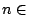
c.
(More precisely,
each existing instance of E1 is related
to n existing instances of E2.)
If no cardinality property is shown, the convention is that c is
the entire set of natural numbers.
For example, in figure A.25, each instance of E2 is
related
to any number instances of E1.
This includes the case that it is related to 0 instances of E1.
Figure A.4:
The line representation of binary relationships is direction-independent.
|
Note that there is no natural reading direction for a
relationship name.
For example, figure A.4 conveys the same information as
figure A.1.
If there is a reading direction, one can adorn the relationship name
with a small arrow that indicates this.
See figure A.5.
Figure A.5:
Reading direction of a
relationship name.
| 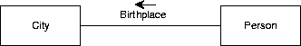 |
Often, a directed relationship name is really a role name of one of
the participating entity types.
Figure A.6:
Different conventions for representing the same constraints.
TESD supports the convention used in the top diagram.
 |
Figure A.7:
Different conventions for representing the same constraints.
TESD supports the convention used in the top diagram.
| 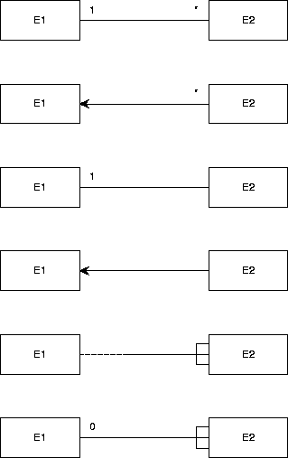 |
There are many other conventions to represent binary relationships.
Figure A.6 shows different ways of representing the following
constraints:
-
Each existing E1 is related to at least one existing E2 and
-
Each existing E2 is related to exactly one existing E1.
Figure A.7 shows different ways of representing the following
constraints:
-
Each existing E1 is related to at any number (including 0)
existing E2 and
-
Each existing E2 is related to exactly one existing E1.
9.1.1.4 Relationships of higher arity
Figure A.8:
The diamond representation for relationships.
|
A relationship is a Cartesian product of two or more entity
types, called its components.
(To be more precise, it is a labeled Cartesian
product.)
Relationships can always be represented by a
diamond, connected by lines to the boxes that represent its
components.
These lines actually
represent the projection functions of a Cartesian product on
its components.
For example,
figure A.8 contains exactly the same information as
figure A.1.
Relationships with arity higher than 2 cannot be represented by a
line.
They can only be represented by a diamond.
Figure A.9 gives an example.
Figure A.9:
A ternary relationship with a
cardinality property.
| 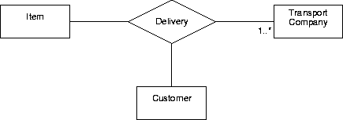 |
The figure also illustrates the notation for a cardinality property
of a relationship with arity higher than 2.
A cardinality property is expressed by an expression c written at
the end of a line, close to an entity type box.
It represents the number of instances of that entity that
participate in the relationship simultaneously.
The property in figure A.9 says that each transport
company participates in at least one delivery.
(This is not very realistic but is does illustrate the convention.)
9.1.1.5 Attributes
Figure A.10:
Representation of attributes.
| 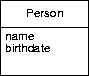 |
Entity attributes are represented by listing them in a separate
compartment below the entity type name.
Representation of entity attributes is optional.
If a relationship itself has attributes, it is represented by an
entity box that contains the relationship name and the attribute
declarations, connected to the relationship line or relationship
diamond with a dashed line.
See figures A.11 and A.12 for illustrations.
Figure A.11:
Representation of associative
entities (line representation).
 |
Figure A.12:
Representation of associative
entities (diamond representation).
 |
9.1.1.7 Is-a relationships
Figure A.13:
The representation of is-a relationships.
 |
An is-a relationship is a binary relationship that is an inclusion
function.
For example, figure A.13 shows that each CAR instance
is also a VEHICLE instance.
Extensionally, the set of all possible cars is a subset of the set of all
possible vehicles.
Intensionally, the set of properties shared by all cars includes the set of
properties shared by all vehicles.
CAR is called a specialization of VEHICLE and VEHICLE is called a generalization of
CAR.
If there is more than one specialization of an entity type, then these must
be grouped into specialization groups.
This is represented by connecting the rectangles representing the
specializations
to a small circle
called the taxonomy junction or generalization node and
connecting this with an is-a arrow to the rectangle representing the
generalization. The generalization node must be annotated as follows:
-
A ``d'' means that the
specializations are mutually disjoint.
-
An ``c'' means that the specializations
jointly covers the generalization.
-
A ``dc'' means the conjunction of ``d'' and
``c'', i.e. the specializations partitions the generalization.
A generalization can be specialized by any number of specialization groups.
For example, figure 4.10 means the following:
- Cars are vehicles and trucks are vehicles.
-
The union of the set of all cars and all trucks equals the set of all
vehicles.
So vehicles are trucks or cars (or both).
- Diesel vehicles are vehicles and gas vehicles are vehicles.
-
There is no vehicle both a diesel and a gas vehicle.
- There may be vehicles that are neither diesel nor gas vehicles.
9.1.2 Data and Event Flow Diagrams (TEFD)
Data flow diagrams (DFDs)
are are available in two TCM editors, called TDFD
(one of the miscellaneous editors)
and TEFD (one of the structured analysis editors).
TEFD allows you to do everything that TDFD can, and it additionally
allows you to draw control processes, event flows and to distinguish
time-discrete from time-continuous flows.
This section explains both editors.
DFDs are described in detail in [23].
A DFD is a directed graph with three kinds of nodes:
- Circles represent processes, also called data transformations or
functions. A process is some computation by a software system.
There are two kinds of processes: Data processes and control processes
(the latter are not supported in TDFD). TEFD supports both processes.
- Squares represent external entities, these are entities with
which the software system must interact.
- Two parallel lines represent a data store, which is a piece of
software memory (e.g. a file or a variable).
The directed edges represent data flows between these nodes.
In figure 6.3, there are three processes, Confirm
Registration, Check Request and Register
students.
When the external entity STUDENT sends a message
test_request, which is a request to participate in a
test, then the process
Check Request retrieves the identifier of the test from
the data store TESTS
and the student identifier from the STUDENTS
data store (the data stores are most likely implemented as files or
in a database).
If the test and student exist, and the student is allowed to
participate in the test, then process
Register
students stores this fact in the TEST_REGISTRATIONS data
store and
Confirm
Registration confirms this to the external entity.
To make the DFD in figure 6.3 more precise, this model must be
supplemented with precise process
specifications, and a specification of the structure of the data
stores and data flows.
9.1.2.2 Hierarchical DFDs
DFDs can be hierarchical.
This means that a process can be specified by means of another DFD,
which has the same external interface as the process being specified.
Such a process is called a compound process.
A process specified in another way (e.g. by means of a piece of text)
is called primitive.
This can be indicated by the letter P in the node that
represents the process.
Compound processes give rise to a tree of DFDs.
Processes in this tree are labeled by means of a Dewey numbering
system that indicates the location of the process in the tree.
For example, process 1.2 is the process with label 2 in the DFD that
specifies the compound process with label 1.
The current version of TCM does not support hierarchical DFD editing.
9.1.2.3 Control processes
DEFDs extend DFDs with a new kind of node, the control process, and
new kinds of edges: event flows and time-continuous flows.
See subsection A.3.3 for DFDs.
A control process is represented by a dashed circle and represents an
aspect of behavior.
It must be specified by means of a STD that has the same interface as
the control process.
This means that the event flows entering the control process must
occur as events in the Mealy STD, and vice versa, and that the event
flows leaving the
control process must occur as actions in the STD, and vice versa.
Figure A.14 contains a DEFD of which the control process is
specified in figure A.15.
Figure A.14:
A DEFD for a robot control process.
| 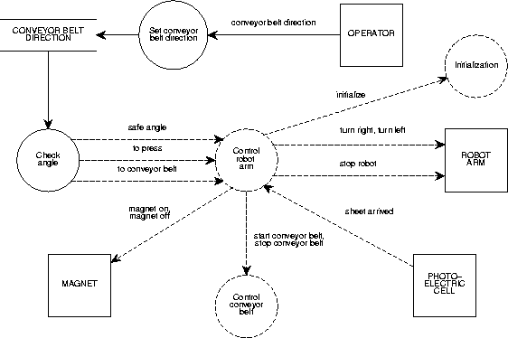 |
Figure A.15:
STD for the robot control process of figure A.14.
| 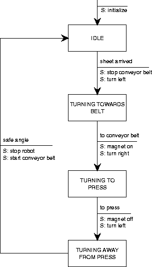 |
9.1.2.4 Event flows
Event flows are represented by dashed arrows.
An event flow can carry a signal without any data contents.
The precise meaning depends upon the method that uses this technique.
See for example the YSM manual [31].
9.1.2.5 Time-Discrete and time-continuous flows
A time-discrete flow carries a value that changes in discrete steps, a
time-continuous flow carries a value that changes in a continuous way.
Time-discrete flows are represented by arrows with a single arrowhead,
time-continuous flows are represented by arrows with a double arrowhead.
Again, the precise meaning depends upon the method used.
9.1.3 State Transition Diagrams (TSTD)
State transition diagrams (Mealy, Moore and statechart)
are described in [23]
Figure A.16:
The Mealy representation of state transition diagrams.
| 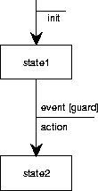 |
TCM supports the Mealy notation for finite state transition diagrams
(figure A.16).
States are named, and are represented by rectangles.
State transitions are represented by arrows and are labeled by
event [guard] / action
pairs.
The event is the trigger
of the transition and can be viewed as the occurrence of an input.
The guard is a condition.
The precise meaning of the guard depends upon the method in which the
notation is used.
A minimalistic interpretation is that if the guard is false, an
occurrence of the event will not trigger the transition.
A more closed interpretation is that additionally, if the guard is
true, an occurrence of the event will trigger the transition.
The action part of the transition label is the output action generated
by the transition.
Each Mealy STD must have an initial state, pointed at by an arrow that
leaves from no node, and that can be labeled by an initialization
action.
TCM also has decision points
which are intermediary states
that the machine may have between system transactions. Decision
points are represented by a hexagon.
Figure A.17:
State transition diagrams.
 |
Figure A.17 shows the a Mealy diagram for a simple coffee
machine in which at two points, an external process is triggered (the
actions that start with T:) that must send the Mealy
machine an answer.
While waiting for an answer, the machine is in the decision point.
Mealy machines are used in Yourdon-style structured analysis, where
they are used to specify control processes [31].
The interface of the control process must equal the interface of the
Mealy machine.
See section A.1.2 for control processes.
9.1.4 Transaction-Use Tables (TTUT)
A transaction-use table is a simple way to discover entity types from
required system transactions.
The leftmost column lists external system functions and the top row
lists the basic Create, Read, Update and Delete actions.
The entries list the entity types or relationships that are created,
read, updated or deleted during the function.
See figure 7.8.
Elaborate examples are given elsewhere [22].
9.1.5 Function-Entity Type Tables (TFET)
The top row of a function-entity
table lists system functions and the leftmost
column represents, for example, entity types.
The entries contain C, R, U or D,
to indicate that this function Creates, Reads, Updates or Deletes
entities of this type.
Instead of entity types, the leftmost column may list relationships,
or subject areas, or data stores in a DFD, with corresponding changes
in the meaning of the CRUD entries.
A function-entity type table is a kind of traceability table
(see [23]).
It is almost the same as a transaction
decomposition table (see section A.3.7).
Function-entity types are used in Information Engineering to find
subsystems.
These are identified
by clustering subject areas and functions in such a way to minimize
data flows between the clusters.
See [22] for details and examples of their use in
Information Engineering.
9.1.6 Function Refinement Trees (TFRT)
A function refinement tree is a tree in which the root represents the
entire system mission and the leaves represent system functions.
The hierarchy of nodes represents the refinement of functions into
subfunctions.
All nodes in the tree represent external functions.
A FRT can be used in combination with a hierarchical DFD to represent
the hierarchy of DFDs.
It is used in information engineering to represent external functions
of an information system [22].
Of course, a tree can be used to represent any hierarchical
decomposition and TCM imposes no constraints on the syntax of the tree.
This section lists the UML notations available in TCM, as they are
treated in [23].
This is a subset of the full UML notation.
9.2.1 Use case diagrams (TUCD)
A use case is a functionality of a system, and actor is a user (person
or device) of the system.
A use case diagram is a graph in which the nodes represent actors and
use cases, and the lines represent connections between use cases and
actors.
The meaning of a line is that the actor is involved in a use case.
A use case diagram is actually a special case of a class diagram with
two special kinds of nodes.
Nodes of the same kind can be connected by a generalization arrow.
An actor is represented by a match stick figure or by a rectangle
labeled actor.
Both shapes can be labeled by an actor name.
Two actors can be connected by a generalization arrow.
Actor names must be unique.
Use ``duplicate node'' if you want to represent one actor several
times in the diagram.
A use case is represented by an ellipse.
It can be labeled.
Two use cases can be connected by a generalization arrow.
9.2.2 Static structure diagrams (TSSD)
A static structure diagram is an extension of an ER diagram.
What is an entity in an ESD is an object in a SSD.
The extensions of TSSD with respect to TESD are the
possibility to declare the behavior of an object and to represent
instances.
There is a change in terminology when we change from ESDs to SSDs:
| Entity-relationship diagram |
UML static structure diagram |
| entity type |
class |
| entity |
object |
| relationship |
association |
| tuple |
link |
| associative entity |
associative object |
| cardinality property |
multiplicity property |
We can give a diagram element a special meaning by labeling it with a
special name between
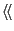guillemets
.
Such a diagram element is called a stereotype.
For example, in a static structure diagram, we can specialize classes
into stereotypes with a special meaning, by writing the stereotype
name in guillemets above the class name.
See figure A.18.
Figure A.18:
Stereotypes and properties.
| 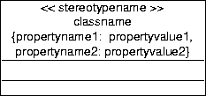 |
Figure A.18 also shows that we can annotate the name
compartment of a class box with properties.
A property is represented by a user-defined property name and a
property value.
This is included in the name compartment as a comment between curly
braces, and it has no UML-defined semantics.
You are free to include any text between curly braces.
The behavior of an object is declared in a third compartment below the
attribute compartment of a class box.
The UML allows the declaration of the operations that the instances of
the class can perform and of the signals that the instances can
receive.
See [23] for details.
An object is represented by a named rectangle with an attribute
compartment.
Figure A.19:
Representation of objects.
| 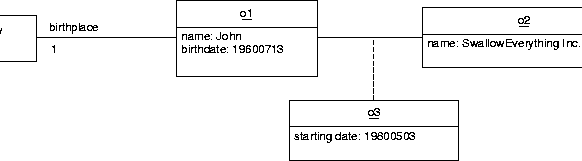 |
The name of an instance is underlined.
The attribute compartment contains the attribute values of the
instance.
See figure A.19.
Notice the association from John to the class City.
This tells us that John has exactly one birthplace but it does not
tell us which one this is, because City is a class.
9.2.3 Activity diagrams (TATD)
An activity diagram is a graph in which the nodes represent activities
and the arrows represent transitions between activities.
Figure A.20 gives an example.
Figure A.20:
An activity diagram.
| 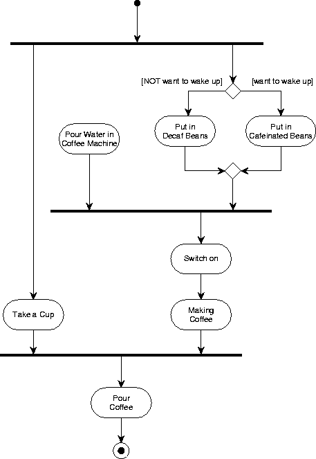 |
Activities are represented by two parallel lines connected by
semicircles.
The name of the activity can be entered in the shape.
Transitions are represented by unlabeled arrows.
A transition represents the completion of the activity from which it
departs.
A choice node is represented by a diamond.
A transition that emanates from a diamond can be labeled by a
[condition] that tells us when this branch is taken.
A choice point is not a state of the system.
Fork and join nodes are represented by fat horizontal or vertical
lines.
If more than one arrow leaves the node, it is a fork node and there
must be exactly one arrow entering it.
A join node represents the start of two or more parallel processes.
If more than one arrow terminates at the node, it is a join node and
there must be exactly one arrow that departs from it.
A join node represents the merging of two or more parallel process
into one process.
The start of an activity diagram is represented by a bullet.
There must be exactly one bullet in a completed diagram.
A final state of an activity is represented by a bull's eye.
There must be at least one final state in an activity completed diagram.
9.2.4 Statechart diagrams (TSCD)
TSCD is used to draw statecharts.
Statecharts are based on state-transition diagrams known from TSTD.
A statechart describes the behaviour of a system,
i.e., the possible orders of events and states.
A state in a statechart may consist of one or several state nodes.
A state node can be refined in two ways:
- An or node
- serves to describe substates.
If the state of the system contains the or node,
it contains exactly one of the subnodes.
The subnodes of an or node are simply drawn inside the
or node.
The initial subnode has an arrow starting at a black dot.
- An and node
- serves to describe parallel behaviour.
If the state of the system contains the and node,
it contains all of the subnodes.
These subnodes are typically refined further,
to describe in which state the single parallel components can stay.
The subnodes of an and node are drawn as compartments which
partition the and node.
As there is no space left for the and node's name, it is
attached to a small box on the outside.
Possible state changes are indicated by transitions.
They are drawn as arrows with a label
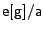,
where
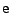
denotes the event which triggers the transition,
is a guard (the transition can only be taken if the guard holds),
and
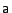
denotes the action executed when the transition is taken
(for example, send an event to another statechart).
In addition to these basic elements,
one can indicate the initial state with an arrow from a black dot
and the final state with a bull's eye.
For an example of a statechart, see figure A.21.
The statechart describes a fan's behaviour.
This kind of fan can produce a cold or hot, and a slow or fast air stream.
Its initial state is Off.
When switched on,
it enters the and node On and its subnodes.
Here, it again selects the initial nodes Slow and Cold.
If the user sends event f to the system,
it switches to Fast.
When the user switches the fan off (by sending an off event),
the fan leaves the On node and all its subnodes
(forgetting the slow/fast and cold/hot settings),
and enters the Off node again.
Figure A.21:
Example of a statechart.
| 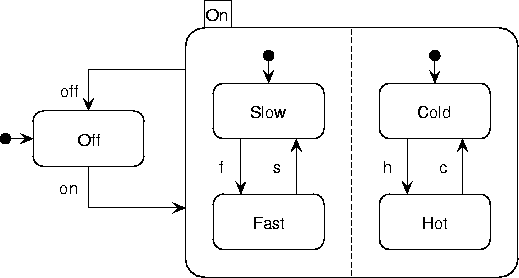 |
9.2.5 Collaboration diagrams (TCBD)
A collaboration diagram is an object diagram that shows the objects
and links involved in a scenario, and also shows the messages passed
in the scenario.
In addition to other UML diagrams a collaboration diagram has
message flows representing messages being sent between objects via
links. See
figure A.22 for an example of the initial dialog
between a client and a ATM.
Figure A.22:
Collaboration diagram messages.
| 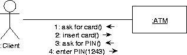 |
9.2.6 Component diagrams (TCPD)
A UML component diagram is a directed graph in which the nodes
represent components and the edges, which are directed, represent
dependencies.
A component is, roughly, any software-like resource delivered during
software development or needed by the delivered software.
This includes the executables and sources of the software system,
utilities needed by the software system, shared libraries, etc.
A dependency may be a compilation dependency, and import dependency,
etc.
The exact meaning of the nodes and edges must be described in the
diagram documentation.
The interface of an executable component is represented by small
rectangles protruding from the component box.
Each class in the class model must be allocated to an executable
component.
This can be represented in a component diagram by enclosing a class icon
inside a component icon.
Alternatively, it can be represented by drawing a dependency arrow from
the class to the component(s) it is allocated to.
9.2.7 Deployment diagrams (TDPD)
A UML deployment diagram is a graph in which the nodes represent
resources and the edges represent communication channels.
A resource is a hardware/software combination that offers computing
power.
This includes mainframes, servers, workstations, PC's, laptops,
handheld computers, organizers, mobile telephones, faxes, printers,
etc.
A channel is any hardware/software combination that offers communication
possibility to resources.
This includes local and wide area networks, wireless communications,
cables, etc.
Each executable component can be allocated to one or more resources.
This can be represented in a UML deployment diagram by drawing a
component icon inside a resource icon.
Alternatively, it can be represented by drawing a dependency arrow from
the component to the resource(s) it is allocated to.
9.3.1 Classic Entity-Relationship Diagrams (TERD)
The TCM convention for ERDs is described in detail
in [22].
9.3.1.1 Entity types
As usual, a named rectangle represents a named entity type.
9.3.1.2 Binary relationships
Binary relationships are presented by lines.
9.3.1.3 Cardinality constraints
Cardinality constraints are represented by
annotations placed at the end points of these lines.
Figure A.23:
The placement of cardinality constraints.
|
For example, in figure A.23, each business has an employment
relationship to more than zero persons and each person has 0 or 1
employment relationships to a business.
The end points of the line can also be annotated with the role that the
entity at that end of the line plays in the relationship.
Figure A.24 gives an example.
Figure A.24:
The placement of role names.
 |
Figure A.25:
The meaning of cardinality constraints.
| 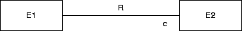 |
In general, a cardinality constraint is represented by a set of natural
numbers (see figure 4.4 for the syntax).
For example, if c is a set of natural numbers, the constraint
in figure A.25 is that each instance of E1 is related
to n instances of E2, where
c 9.1.
If no constraint label is shown, the convention is that the constraint is
the entire set of natural numbers, i.e. it is no constraint.
For example, in figure A.25, each instance of E2 is
related
to any number instances of E1.
This includes the case that it is related to 0 instances of E1.
Figure A.26:
The arrow representation of many-one constraints.
| 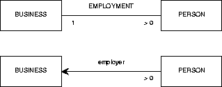 |
There are various conventions for the placement of the cardinality
constraints, all of which are a source of confusion.
The choice made in TCM is motivated as follows.
We use the convention that a cardinality constraint of 1 can be abbreviated
by an arrowhead.
So the two diagrams in figure A.26 are equivalent as far as
their cardinality constraints are concerned.
They both mean that each person is related to exactly 1 business and that
each business is related to at least one person.
This means that the relationship is a mathematical function from persons to
businesses, which explains the arrow convention.
To facilitate a smooth transformation between these two representations,
the cardinality constraint labels must be placed where they now are.
Figure A.27:
The line representation of binary relationships is direction-independent.
|
Note that the naming of the relationship usually must change when we switch
to the arrow notation.
In the line notation, there is no natural reading direction for the
relationship name.
For example, figure A.27 conveys the same information as
figure A.23.
In the arrow representation, by contrast, there is a natural reading
direction and we adapt the relationship name accordingly.
Often, the role name of the entity type at the arrowhead becomes the
relationship name.
Figure A.28:
Different conventions supported by the
classic TERD editor for representing the same constraints.
| 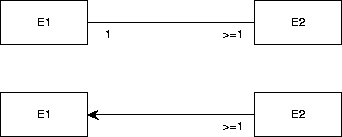 |
Figure A.29:
Different conventions supported by the
classic TERD editor for representing the same constraints.
 |
There are many other conventions to represent binary relationships.
Figure A.28 shows different ways of representing the following
constraints:
-
Each existing E1 is related to at least one existing E2 and
-
Each existing E2 is related to exactly one existing E1.
Figure A.29 shows different ways of representing the following
constraints:
-
Each existing E1 is related to at any number (including 0)
existing E2 and
-
Each existing E2 is related to exactly one existing E1.
9.3.1.4 Relationships of higher arity
Figure A.30:
The diamond representation for relationships.
|
A relationship is a Cartesian product of two or more entity
types, called its components.9.2
Relationships of arity higher than 2 are represented by a
diamond, connected by arrows to the boxes that represent its components.
These arrows represent the projection functions of a Cartesian product on
its components.
Figure A.30 contains exactly the same information as
figure A.23.
Note the placement of the cardinality constraints, which is at the root of
the arrow.
This agrees with the placement convention of constraints on relationship
lines.
In fact, one can view the arrows in figure A.30 as binary
relationships between EMPLOYMENT and its two components.
The meaning is that each business is related to at least one employment
instance (and hence to exactly one person),
and that each person is related to exactly one employment instance (and
hence to exactly one business).
This agrees with the meaning of figure A.23.
9.3.1.5 Value types
Value types (often called ``data types'') are represented by ovals.
9.3.1.6 Attributes
Entity attributes are represented by arrows from an entity type to an
oval
and relationship attributes are represented by arrows from a relationship
diamond to an oval.
This means that the TCM convention does not distinguish between
``ordinary'' relationships, which do not have attributes, and ``associative
entity types'', which are relationships that can have attributes.
9.3.1.7 Is-a relationships
Figure A.31:
The representation of is-a relationships.
|
An is-a relationship is a binary relationship that is an inclusion
function.
For example, figure A.31 shows that each CAR instance
is also a VEHICLE instance.
Extensionally, the set of all possible cars is a subset of the set of all
possible vehicles.
Intensionally, the set of properties shared by all cars includes the set of
properties shared by all vehicles.
CAR is called a specialization of VEHICLE and VEHICLE is called a generalization of
CAR.
If there is more than one specialization of an entity type, then these must
be grouped into specialization groups.
This is represented by connecting the rectangles representing the
specializations
to a small circle
called the taxonomy junction and connecting this with an
is-a arrow to the rectangle representing the generalization.
The taxonomy junction must be annotated as follows:
-
A ``d'' means that the
specializations are mutually disjoint.
-
An ``e'' means that the specializations
jointly exhaust the generalization.
-
A ``de'' means the conjunction of ``d'' and
``e'', i.e. the specializations partition the generalization.
A generalization can be specialized by any number of specialization groups.
For example, figure 4.5 means the following:
- Cars are vehicles and trucks are vehicles.
-
The union of the set of all cars and all trucks equals the set of all
vehicles.
So vehicles are trucks or cars (or both).
- Diesel vehicles are vehicles and gas vehicles are vehicles.
-
There is no vehicle both a diesel and a gas vehicle.
- There may be vehicles that are neither diesel nor gas vehicles.
9.3.2 Class-Relationship Diagrams (TCRD)
9.3.2.1 Classes
The CRD notation of TCM follows the convention that a class is represented
by a rectangle subdivided into three areas, that contain, from top to
bottom, the class name, the attributes, and the events that can occur in
the life of the class instances.
TCM can hide one or both of the event and attribute areas from view.
9.3.2.2 Relationships
Figure A.32:
The CRD representation of relationships.
|
Relationships are represented by rectangles just as classes are.
They are connected to their components by means of dashed arrows.
The meaning is exactly the same as in the ERD case.
Figure A.32 has exactly the same information content as
figures A.23, A.27 and A.30.
The line representation (figure A.23) is also allowed in the
CRD convention.
The advantage of the CRD convention over the diamond representation
is that a rectangle allows easier
placement of text inside the area.
In addition, the CRD convention used in TCM allows representation of such
complex structures as represented in figure A.33, which cannot
be represented in the ERD convention.
Figure A.33:
The CRD convention can represent complex mathematical structures.
| 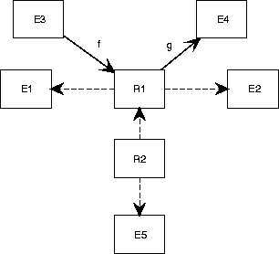 |
Figure A.33 represents the following structures.
(To reduce clutter in the notation, we ignore the fact that
relationships are actually labeled Cartesian products.)
- R1 = E1
E2
- f : E3
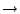
R1
- g : R1
E4
- R2 = R1
E5
9.3.2.3 Is-a relationships
Figure A.34:
Static specialization.
| 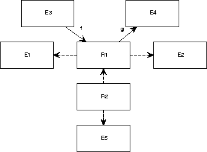 |
The CRD convention for representing is-a relationships extends the ERD
convention with constructs to represent static and dynamic specialization.
A static specialization group is represented by a small closed circle,
called a taxonomy junction,
and
a dynamic specialization group is represented by a dashed circle, called a
mode junction (see figure 4.12).
In figure A.34, an instance of CAR will never
become an instance of AIRPLANE and vice versa.
An instance is a member of a specialization for life.
By contrast, in figure 4.16, an instance of MARRIED PERSON
may move to another of the subclasses of PERSON.
Here, an instance is an instance of a specialization only for part of its
life.
We call these specialization mode classes.
For example, MARRIED PERSON is a mode class of PERSON, because a married person is a mode of a person.
Details of static and dynamic specialization are given
elsewhere [24,25].
9.3.3 Data Flow Diagrams (TDFD)
TDFD contains a subset of TEFD. Please see section A.1.2.
9.3.4 Process Structure Diagrams (TPSD)
Figure A.35:
A process structure diagram.
| 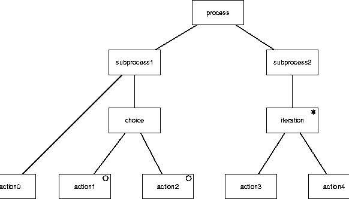 |
Process structure diagrams are used in JSD to represent behavior.
A PSD is a tree in which the nodes are
labeled [11,22].
The leaves of the tree represent atomic actions and the root
represents the entire process.
Sequence is represented by a left-to-right ordering of the children of
a node.
Iteration is represented by an asterisk label and choice by a small
circle in the nodes that represent the options.
Figure A.35 gives an example.
PSDs are equivalent to regular expressions.
Figure A.36:
A Mealy diagram roughly equivalent
to figure A.35.
| 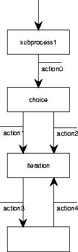 |
A Mealy machine roughly equivalent to this is shown in
figure A.36.
The names of the nodes in a PSD can be reused as state names in a
Mealy STD.
However, the Mealy convention forces us to categorize an action as an
input or output action, whereas in PSDs this is not the case.
In figure A.36
we arbitrarily categorized all PSD actions as output actions.
In JSD, PSDs are used to represent processes in reality and to
represent processes in the machine.
If used to represent processes in reality, common actions between PSDs
represent synchronous communication between these processes.
If used to represent processes in the software, communication between
processes is represented by means of system network diagrams, described
in section A.3.5 below.
9.3.5 System Network Diagrams (TSND)
SNDs are used by JSD [11] to represent communication
between processes.
SNDs are directed graphs with two kinds of nodes, that represent
processes and communications.
A process node must be specified by a PSD, just as a control process
in a DEFD must be specified by a STD.
There are three kinds of communication nodes:
- Data streams , represented by a circle.
These are FIFO queues, somewhat like Unix pipes between two processes.
Communication through a data stream connection is asynchronous.
-
State vector connections ,
in which the reader process reads the state of the writer process.
Initiative of the communication lies with the reader.
The writer is not disturbed by the read action.
The communication is synchronous.
A state vector connection is represented by a diamond connected to the
reader by an arrow and to the writer by an undirected line.
The direction of the arrow represents the direction of data flow.
- Controlled data stream connections ,
represented by a circle with a small vertical line in it.
The circle is connected to a reader and a writer, where an arrow is
used to indicate the direction of data flow.
Communication is synchronous and takes place on the initiative of the
reader.
The reader checks the current state of the writer and if this
satisfies a certain condition, may update this state by sending it a
message.
Figure A.37:
An SND of the robot controller of figure A.14.
| 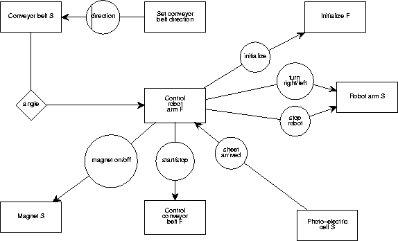 |
Figure A.37 shows a SND of the robot controller
of figure A.14.
All rectangles represent software entities.
External entities are not shown.
We used the convention to end the name of
a software entity that represents an
external entity with an S (for ``surrogate''), and to end
the name of a
software entity that embodies a software function with an F.
Each of the surrogate and function processes in the model must be
specified by a PSD.
9.3.6 Recursive Process Graphs (TRPG)
Figure A.38:
A recursive process graph.
| 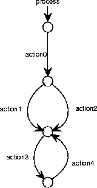 |
Figure A.39:
A recursive process graph with labeled nodes.
| 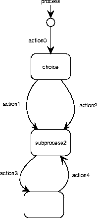 |
A recursive process graph is a rooted directed graph in which the
nodes represent states and the edges represent atomic actions or other
processes.
Figure A.38 shows a RPG equivalent to the PSD of
figure A.35.
Nodes in RPGs can be labeled, just as in Mealy STDs.
Figure A.39 shows a RPG with labeled nodes.
An RPG has an initial node, which is pointed at by a small arrow and
which can be labeled by the name of the process.
Figure A.40:
A recursive process graph with a call to another process.
| 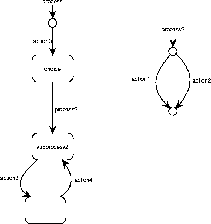 |
An edge in a RPG can be labeled with the name of an action or of a
process.
If it is labeled with a process name, the transition is equivalent to
performing this process.
Figure A.40 illustrates this.
The RPG in figure A.40 is equivalent to that of
figure A.39.
Figure A.41:
A recursive process graph with a recursive call.
| 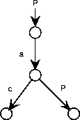 |
The call to another process can be recursive, as illustrated in
figure A.41.
This describes the process with possible traces
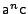
for 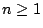.
Recursive process graphs are defined formally by Spruit and
Wieringa [26], based upon the idea of recursive transition
networks [27].
9.3.7 Transaction Decomposition Tables (TTDT)
A transaction decomposition table is used to set off software entities
against external atomic system functions, called transactions.
The entries of the table then represent the work performed by the
software entities during the transaction.
For example, figure 7.7 says that the transaction
start_controlling_temperature requires some actions to be taken by
software entities:
A BATCH object must perform action do_temperature_ramp, etc.
Transaction decomposition tables can also be used in combination with
ERDs and DFDs.
The left-hand column then represents entity types or data stores, and
the entries contain the letters C, R, U or D to indicate whether an
instance of the entity type is created, read, updated or deleted
during the transaction.
The resulting table is also called a CRUD table.
Transaction decomposition tables can also be used in JSD to discover
communications.
They also help to maintain traceability.
Methodological details are provided elsewhere [22,21].
Footnotes
- ...
c 9.1
- More precisely,
each existing instance of E1 is related
to n existing instances of E2.
- ... components.9.2
- To be more precise, it is a labeled Cartesian
product.
Next: 10. Frequently Asked Questions
Up: Toolkit for Conceptual Modeling
Previous: 8. Tree Editing
Henk van de Zandschulp
2003-01-20